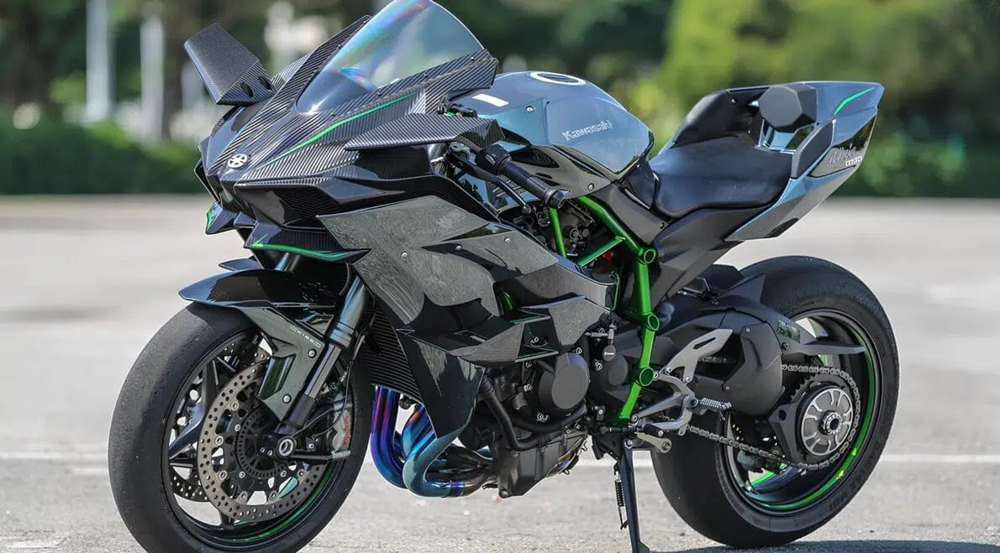
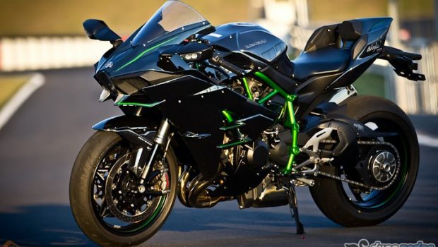

Kawasaki ninja h2r
A Kawasaki Ninja H2R é uma superesportiva de pista, conhecida por ser uma das motos mais rápidas e potentes do mundo. A H2R possui um motor de 998cc sobrealimentado, que gera mais de 300 cavalos de potência

ninja h2

A Kawasaki Ninja H2 é uma superesportiva de quatro tempos sobrealimentada, com um motor tetracilíndrico de 998cc e um compressor centrífugo de velocidade variável